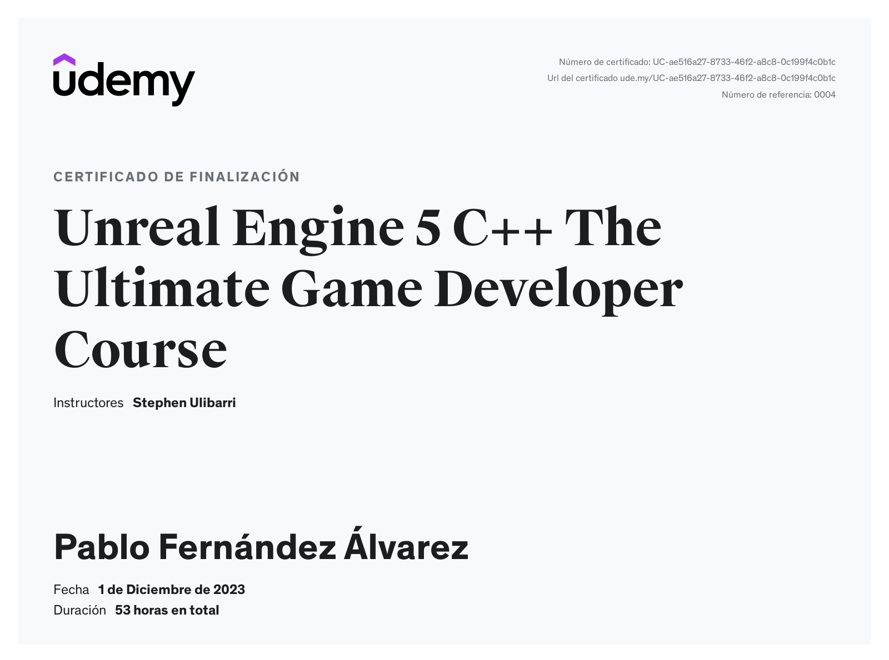
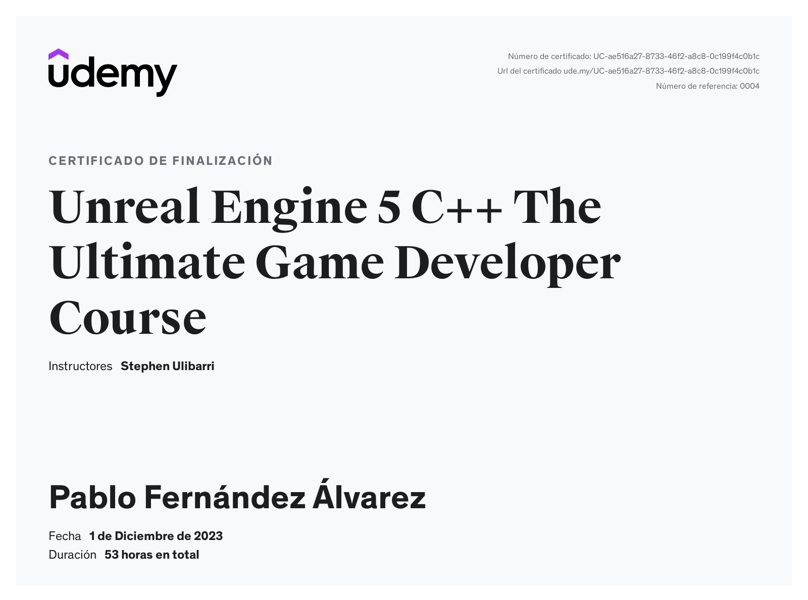

My Projects
In-progress 3D Custom Engine with OGRE3D
The goal of this project is to learn about 3D engine development. To achieve this, I will convert my 2D engine into a 3D one. This requires replacing the necessary modules; I will build the engine around OGRE3D, which is a middleware library that abstracts the user from low-level graphics concepts and provides a scene and resource manager, among other features.
For example, for physics, I will switch from Box2D, which is a 2D physics library, to Bullet3D or PhysX. The same happens with the Audio module, etc. For the user, the gameplay architecture will remain the same, but internally I will reuse the ECS from the 2D engine and integrate it with OGRE’s entity and node system.
Enhacements to 2D Engine from Final Degree Project
The goal of this personal project is to learn game engine development. For that, I isolated the Engine part of my final degree project and started making enhancements. As a brief summary, the engine is divided into several parts: Core/Utilities, IO System with support for mouse, keyboard and multiple controllers, Physics System (uses Box2D), Entity-Component-System (The runtime architecture model), Rendering System (uses SDLImage) and Sound System (uses SDLMixer). The goal is to improve the 2D engine and create some tools, make a simple game with it to showcase it's posibilities.
In the image on the left, you can see a clone of the famous videogame Angry Birds. To create the level, I used the TILED map editor, and with the help of the Tileson library, I processed the map data to create the corresponding entities in my scene.
In the image on the right, you can see a Breakables system in action, implemented using the Voronoi subdivision algorithm.
Shy Engine | 2D Engine for Non-Programmers (Final Degree Project)
Shy is the name of the project we developed as a team of three for the final degree project (TFG). It is a 2D game engine and editor designed for non-programmers. The objective is to provide a tool for creating simple 2D games with a lower learning curve compared to the more commonly used engines today, focusing on individuals with limited experience in programming or game development in general. The development of the project was divided into three main parts: core engine, editor and scripting system
In the image on the right, you can see the Shy engine editor, composed of windows such as the Viewport, File Explorer, Object Hierarchy, Components, Console others.
In the image on the right, you can see the scripting view, implemented through connected visual nodes.
DOME | 2D Survival-Shooter game developed using SDL
DOME is a 2D survival shooter set on the frozen planet Aurora, where the player controls one of the last survivors of a failed colony. Each day is divided into two phases:
Daytime (12 hours): explore and loot various locations (pharmacies, supermarkets, etc.) for resources like food and medicine, limited by the player’s condition and inventory.
Nighttime (12 hours): return to the shelter to craft, manage resources, heal, and rest. Each night offers five action points to perform tasks before sleeping.
The ultimate goal is to collect spaceship parts to rebuild and escape the planet while surviving the extreme cold and managing health, fatigue, and supplies.
Mini-games developed using PS4 Development Kit
Some minigames programmed using a PS4 Development Kit. They were implemented using CPU for rendering, using two threads: one for logic processing and the other for rendering. The logic thread sends render commands to the render thread, which then processes them. Communication was facilitated through a concurrent queue. Something cool to mention is that the player can move the cursor with the controller gyroscope.


 
